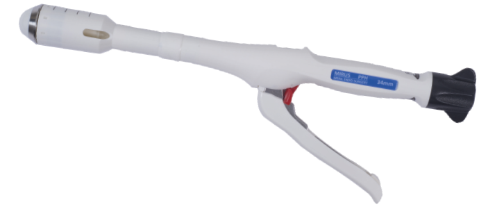

Stapler that places a row of staples in a linear fashion.
Procedure using a looped suture or clip to close off vessels or ducts.
Sealing of the internal space of a tubular structure.
Surgical techniques that require smaller incisions and cause less damage.
Single-strand suture known for its smoothness and strength.
Clip that remains in the body permanently without being absorbed.
Stapler designed to remain in the body without degradation.
Traditional surgery performed through large incisions.
Closing of the peritoneal cavity after surgery.
Clip used to prevent complications or recurrence of a condition.
Clip that is visible on X-rays for easy identification.
The connective tissue surrounding the rectus abdominis muscle.
Suture used to maintain the position of tissues during healing.

Large vein in the leg used for
grafting in bypass surgeries.
Stapler with a serrated edge to grip and secure tissues.
Stapler designed specifically for closing skin wounds.
Surgical incision into a sphincter muscle to relieve pressure or obstruction.
Surgery performed on the spine to treat disorders or injuries.
The row of staples placed by a stapling surgery.
The process of removing staples after the wound has healed.
Stapler made from stainless steel for durability and resistance to corrosion.
Narrowing of a bodily passage or opening.
A controlled area free from microorganisms used during surgery.
Surgical incision into the sternum to